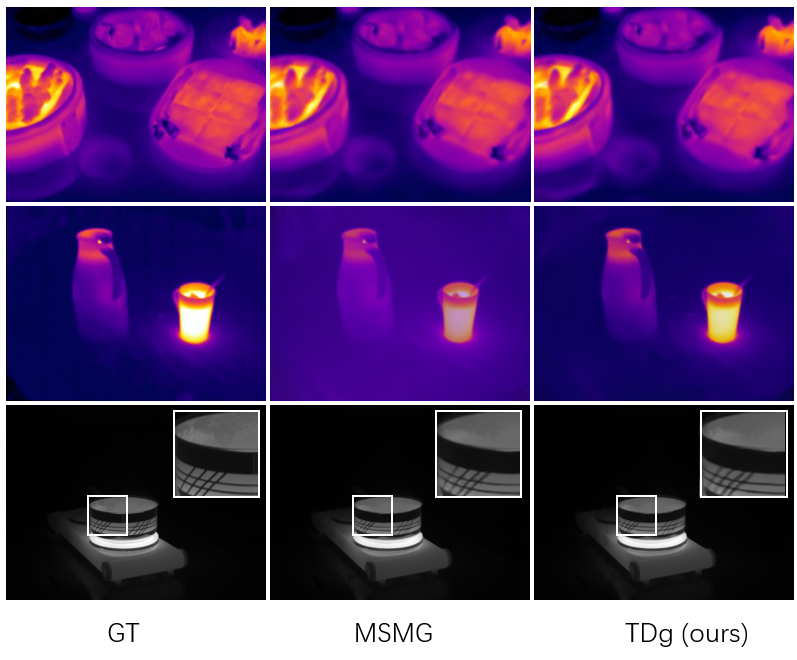

2026

C. Kleinbeck, L. Theelke, H. Schieber, U. Eck, R. Eisenhart-Rothe, D. Roth
accepted @ IEEE VR 2026.
Volumetric medical imaging offers great potential for understanding complex pathologies. Yet, traditional 2D slices provide little support for interpreting spatial relationships, forcing users to mentally reconstruct anatomy into three dimensions. Direct volumetric path tracing and VR rendering can improve perception but are computationally expensive, while precomputed representations, like Gaussian Splatting, require planning ahead. Both approaches limit interactive use. We propose a hybrid rendering approach for high-quality, interactive, and immersive anatomical visualization. Our method combines streamed foveated path tracing with a lightweight Gaussian Splatting approximation of the periphery. The peripheral model generation is optimized with volume data and continuously refined using foveal renderings, enabling interactive updates. Depth-guided reprojection further improves robustness to latency and allows users to balance fidelity with refresh rate. We compare our method against direct path tracing and Gaussian Splatting. Our results highlight how their combination can preserve strengths in visual quality while re-generating the peripheral model in under a second, eliminating extensive preprocessing and approximations. This opens new options for interactive medical visualization.

M. Biswanath*, C. Cai* H. Schieber, D. Roth, and B. Busam
accepted ISPRS congress 2026.
* denotes equal contribution.
Efficient and robust 3D scene representation is crucial in fields such as robotics, autonomous driving, and augmented reality. While RGB images provide valuable content for 3D reconstruction, other modalities like thermal or depth can enable additional information on the 3D environment. Lately, novel view synthesis methods like 3D Gaussian Splatting have started using multiple modalities to further boost their performance. But fusing or combining those multi-modal data can make the process slower and can bring in additional challenges. Therefore, our project aims to use single modality based on thermal infrared domain, by removing the reliance on visible light, as much as possible. This single modality can be expected to be faster as it doesn’t rely on multimodal data. We propose a method Thermal-to-Depth Gaussian (TDg), that uses only thermal images and depth estimation in its architecture to derive the thermal radiance fields. Our method performs better than the MSMG (Multiple Single-Modal Gaussians) baseline in most cases on our test datasets, RGBT-Scenes and ThermalMix. On average, the rendering quality metrics PSNR, SSIM, and LPIPS of our TDg method are 27.42, 0.8899, 0.175, which are better than the baseline MSMG values 27.18, 0.8896, 0.177. It also reduces the training time significantly, from 0.389h to 0.176h. Overall our method is successful in deriving these 3D thermal models/radiance fields, which can ultimately have several applications, such as identifying heat sources critical in surveillance, search and rescue operations, industrial inspections where temperature is widely used to monitor machines.